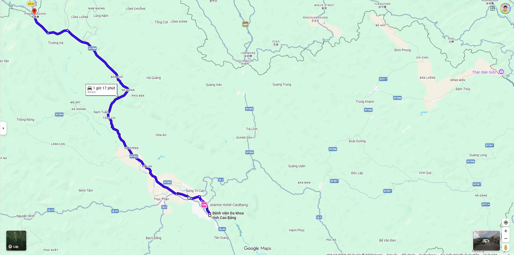
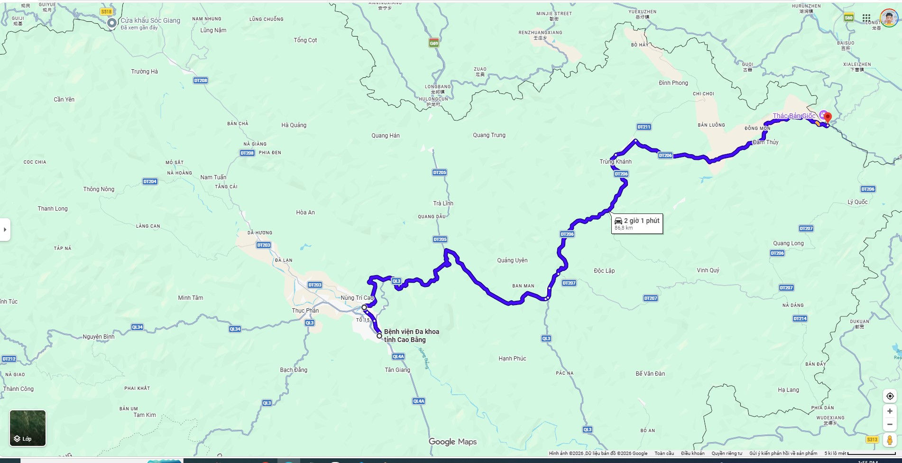
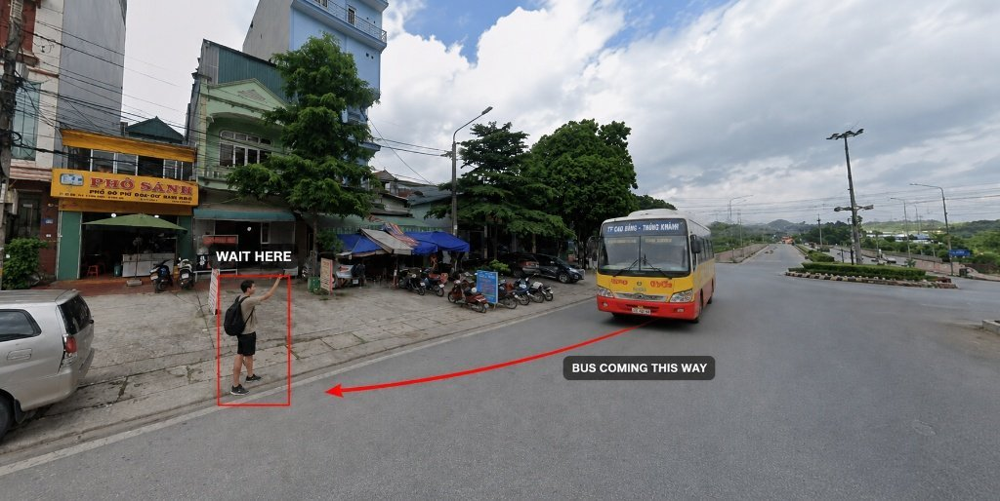
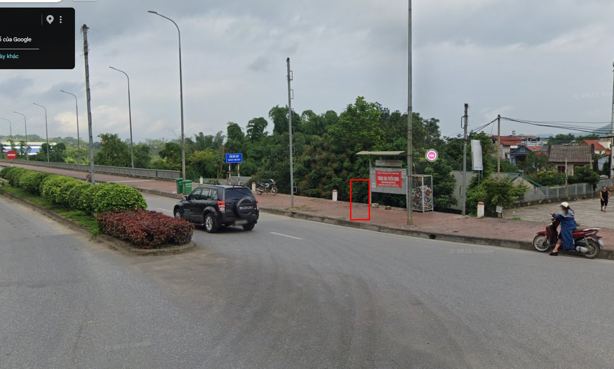

Two routes covering the whole province — cheap, frequent, and stops right in front of the hotel.
Cao Bang has two public bus lines covering the main attractions. Both stop in front of the hotel — no need to find a bus station. Tickets are paid to the conductor on board (~15,000₫ per ride).

🏨 This bus stops in front of Hoa An Hotel — flag it down from the pavement.

⚠️ This bus picks up passengers at the transfer point (Đường Tròn Ngọc Xuân), not at the hotel directly — see guide below.
Step outside and stand on the right side of the road — the pavement directly in front of the hotel entrance. The bus approaches from your left.
When you see a bus approaching (direction look like the video), raise your hand to flag it down. You don't need to cross the road — the bus runs in the same direction as traffic on your side.
Once on board, tell the conductor your destination. They'll know exactly where to drop you for the transfer — no need to watch the stops yourself.
Tôi cần đi Thác Bản Giốc, xin hãy cho tôi xuống điểm chuyển tuyến tại Đường Tròn Ngọc Xuân.
The conductor will tell you when. Once off, walk ~30 metres in the same direction the bus was going — you'll reach a roundabout. Phở Sành restaurant will be your waiting point. Wait on the roadside here for Route 03.

Same as before — wave your hand at the bus coming from the right. Tell the conductor:
The bus drops you right at the Ban Gioc entrance gate. Admission ticket is sold at the gate. Enjoy the waterfall!
From the waterfall entrance, flag down a bus going in the opposite direction. Tell them "Cao Bằng". Get off again at Đường Tròn Ngọc Xuân to transfer to Bus Route 02 back to the hotel.
Where to wait for Bus 02: after getting off, cross over to the opposite side of the roundabout — next to the bridge. Look for the small bus stop kiosk; wait on the brick-paved sidewalk beside it. Wave your hand to flag down Bus 02 as it approaches — it won't stop automatically.

Last bus back: 17:00 — don't miss it or you'll need a motorbike taxi (~150.000₫).
We'll confirm bus times and give you a heads-up on anything unusual — road conditions, busy weekends, etc.